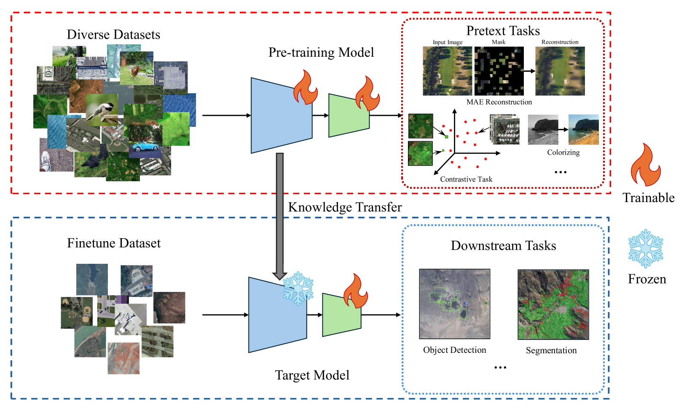
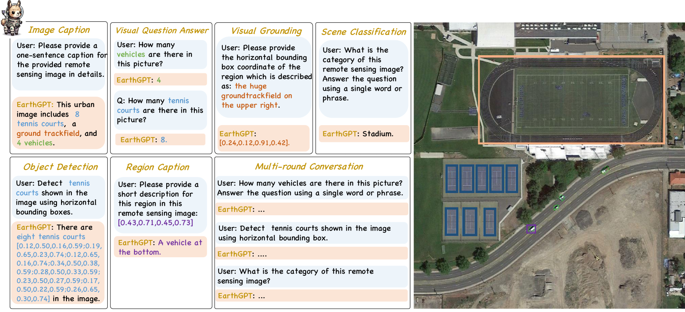
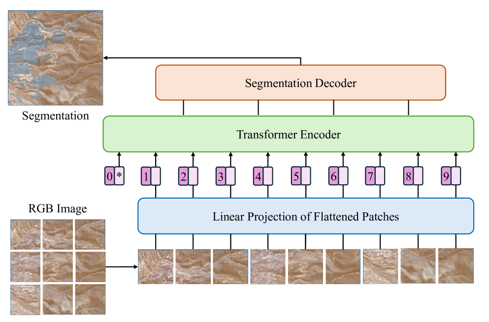
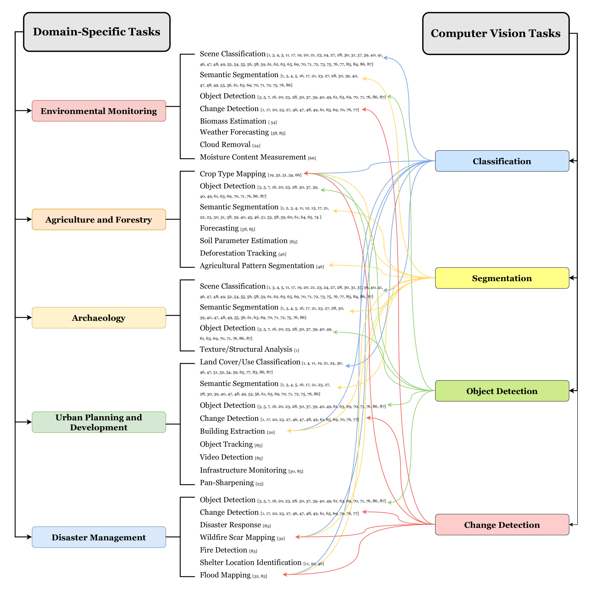

1 Introduction
El Remote Sensing juega un papel fundamental en la observación y análisis de la Tierra, permitiendo el monitoreo continuo y detallado de nuestro planeta a través de tecnologías satelitales y aéreas. Desde la detección de cambios ambientales hasta la gestión de desastres naturales, su relevancia se ha incrementado exponencialmente en los últimos años gracias a la creciente disponibilidad de datos de alta resolución y la evolución de los métodos de procesamiento.

En este contexto, los modelos fundacionales (FMs) representan una innovación significativa. Estos modelos pre-entrenados, capaces de aprender representaciones generales a partir de grandes volúmenes de datos no etiquetados, permiten una adaptación eficiente a tareas específicas con la necesidad de pocos datos anotados. La versatilidad de los FMs radica en su capacidad de abordar múltiples aplicaciones en Remote Sensing, como la segmentación de imágenes, detección de objetos y clasificación de escenas, optimizando así el análisis de datos complejos.
1.1 Conceptos de Modelos Fundacionales
1.1.1 Modelo fundacional (MF)
Un modelo fundacional se define como un modelo de inteligencia artificial pre-entrenado en grandes volúmenes de datos no etiquetados que puede ser ajustado (fine-tuned) a una variedad de tareas específicas con un esfuerzo computacional significativamente menor. Estos modelos han demostrado capacidades avanzadas de generalización, adaptabilidad y eficiencia en dominios complejos como el Remote Sensing (Xiao et al. 2024).
En el ámbito de Remote Sensing, los modelos fundacionales aprovechan datos multiespectrales, temporales y de alta resolución espacial obtenidos de sensores satelitales y aéreos. Su aplicación permite resolver tareas críticas como la clasificación de escenas, segmentación semántica, detección de objetos y detección de cambios con alta precisión y eficiencia computacional (Jakubik et al. 2023).
1.1.2 Pre-entrenamiento
El pre-entrenamiento es el proceso mediante el cual un modelo aprende representaciones generales del dominio a partir de grandes volúmenes de datos no etiquetados. Esta etapa utiliza técnicas de aprendizaje auto-supervisado (SSL) como el contrastive learning y el masked autoencoding, permitiendo al modelo captar patrones, relaciones y estructuras en los datos sin intervención manual en el etiquetado (Lu et al., 2024). En el caso del Remote Sensing, el pre-entrenamiento se lleva a cabo sobre datos satelitales masivos como Sentinel-2, BigEarthNet o HLS (Jakubik et al. 2023).
1.1.3 Fine-Tuning
El fine-tuning consiste en ajustar un modelo fundacional pre-entrenado a una tarea específica utilizando un conjunto de datos etiquetados más reducido. Durante esta etapa, el modelo reutiliza las representaciones generales aprendidas en el pre-entrenamiento y las optimiza para una aplicación concreta, como la segmentación de imágenes o la detección de objetos. Este enfoque mejora la eficiencia del modelo al reducir la necesidad de grandes cantidades de datos etiquetados y recursos computacionales (Xiao et al. 2024).
En resumen, los modelos fundacionales revolucionan el Remote Sensing al permitir la aplicación eficiente de técnicas avanzadas de inteligencia artificial en tareas complejas y multiespectrales, facilitando el análisis de datos geoespaciales a escala global.
1.2 Tipos de Modelos Fundacionales
Visual Foundation Models (VFMs): Estos modelos se centran en el procesamiento y análisis de datos visuales, abordando tareas como segmentación semántica, detección de objetos y clasificación de escenas. Utilizan arquitecturas avanzadas como Vision Transformers (ViT) y enfoques auto-supervisados para maximizar la eficiencia en escenarios con datos multiespectrales y de alta resolución (Jakubik et al. 2023), (Lu et al. 2024).

Vision-Language Models (VLMs): Diseñados para integrar datos visuales y textuales, estos modelos combinan imágenes satelitales con descripciones textuales para realizar tareas como visual grounding, generación de descripciones automáticas y respuestas a preguntas basadas en imágenes. Su capacidad multimodal permite aplicaciones más intuitivas y precisas en el campo del Remote Sensing (Xiao et al. 2024) .

1.3 Arquitecturas Comunes
Convolutional Neural Networks (CNNs): Estas redes son ampliamente utilizadas por su capacidad para extraer características jerárquicas de imágenes a través de operaciones convolucionales. En Remote Sensing, han demostrado eficacia en tareas como clasificación de imágenes y detección de objetos, pero enfrentan limitaciones en la captura de dependencias globales en imágenes de alta resolución (Lu et al. 2024).
Vision Transformers (ViT): Los Transformers son arquitecturas basadas en mecanismos de self-attention que permiten modelar dependencias de largo alcance en imágenes dividiéndolas en parches tratados como secuencias. Su flexibilidad y precisión los hacen ideales para tareas como la segmentación semántica en datos multiespectrales y multitemporales (Jakubik et al., 2023).

Masked Autoencoder (MAE): Este modelo utiliza el enfoque de reconstrucción de imágenes donde una fracción significativa de los píxeles se enmascara durante el entrenamiento, y el modelo aprende a predecir las partes faltantes. En Remote Sensing, los MAE son efectivos para captar patrones en datos satelitales multiespectrales y temporales, optimizando la eficiencia en tareas de imputación y análisis de imágenes incompletas (Xiao et al. 2024).
1.4 5. Datasets en Remote Sensing
| Nombre del Dataset | Tamaño | Resolución | Características Clave | Paper de Referencia |
|---|---|---|---|---|
| Sentinel-1/2 | 1M+ imágenes | 10-30m | Multiespectral y temporal | (Xiao et al. 2024) |
| Harmonized Landsat-Sentinel (HLS) | 1TB | 30m | Imagen multitemporal y multiespectral | (Jakubik et al. 2023) |
| BigEarthNet | 590K+ | 10-60m | Cobertura en Europa | (Lu et al. 2024) |
| SSL4EO-S12 | 3M+ | 10-60m | Multimodal (SAR + óptico) | (Xiao et al. 2024) |
1.5 Metodologías de Pre-Entrenamiento
1.5.1 Supervised Learning
El pre-entrenamiento con datos etiquetados, como en el caso del dataset MillionAID, consiste en entrenar modelos utilizando grandes volúmenes de datos previamente anotados con etiquetas precisas. Este enfoque facilita la capacidad del modelo para capturar representaciones complejas y específicas del dominio, lo que resulta particularmente efectivo en tareas como la clasificación de escenas y la detección de objetos en Remote Sensing (Lu et al. 2024). En este contexto, MillionAID se ha convertido en un recurso clave al proporcionar un conjunto diverso de imágenes que abordan múltiples categorías globales, contribuyendo significativamente al desarrollo de modelos robustos y generalizables (Xiao et al. 2024).
1.5.2 Self-Supervised Learning (SSL)
Contrastive Learning: Este enfoque utiliza pares positivos y negativos para maximizar la similitud entre representaciones de datos similares y minimizarla entre diferentes. Los pares positivos se generan generalmente aplicando transformaciones a la misma muestra, como recortes, rotaciones o cambios de escala, mientras que los pares negativos provienen de diferentes muestras dentro del lote de datos. Este mecanismo fuerza al modelo a aprender representaciones invariantes a estas transformaciones, lo que es crucial en datos multitemporales. Por ejemplo, SeCo emplea aprendizaje contrastivo para capturar invariancias temporales en datos de observación terrestre, mientras que GASSL integra geolocalización y aprendizaje temporal para enriquecer las representaciones, aprovechando datos satelitales masivos (Xiao et al. 2024).
Masked Autoencoding: En este método, el modelo aprende a reconstruir las partes faltantes de una entrada, lo que mejora su comprensión de estructuras globales. SatMAE es un ejemplo clave que se enfoca en datos multiespectrales y multitemporales, mientras que Scale-MAE incorpora información de diferentes escalas para optimizar el aprendizaje (Jakubik et al. 2023).
Multimodal Pre-training: Este enfoque integra diferentes tipos de datos, como SAR, ópticos y auxiliares, para mejorar la capacidad del modelo en tareas complejas. La combinación de modalidades permite al modelo captar patrones complementarios y abordar la heterogeneidad en datos de Remote Sensing (Lu et al. 2024).
1.6 Aplicaciones en Tareas de Remote Sensing

1.6.1 Clasificación de Escenas
La clasificación de escenas es el proceso mediante el cual se categorizan imágenes satelitales completas en clases predefinidas, como áreas urbanas, forestales, cuerpos de agua o agrícolas. Este enfoque permite extraer información útil para tareas como la gestión de recursos naturales, el monitoreo ambiental y la planificación urbana. Modelos como GeoKR y CSPT son ejemplos destacados que emplean arquitecturas avanzadas para mejorar la precisión y escalabilidad en este tipo de tareas.
1.6.2 Segmentación Semántica
La segmentación semántica es una tarea crítica en Remote Sensing que asigna una etiqueta a cada píxel de una imagen, permitiendo la identificación precisa de diferentes tipos de cobertura terrestre como agua, bosques y áreas urbanas. Este nivel de detalle es esencial para aplicaciones como la gestión ambiental, la planificación urbana y la agricultura de precisión. Por ejemplo, Prithvi ha demostrado ser efectivo en tareas de segmentación multitemporal, aprovechando datos multiespectrales para mapear dinámicamente cambios en el uso de la tierra. De manera similar, SatMAE++ utiliza enfoques avanzados de auto-codificación para mejorar la segmentación en imágenes con variabilidad de escalas, logrando una alta precisión incluso en escenarios complejos (Jakubik et al. 2023), (Xiao et al. 2024).
1.6.3 Detección de Objetos
La detección de objetos es un proceso en el cual se identifican y localizan entidades específicas dentro de imágenes satelitales, como edificios, vehículos o embarcaciones. Este enfoque es fundamental para aplicaciones como el monitoreo urbano, la gestión de desastres y la supervisión de infraestructuras críticas. Por ejemplo, RingMo utiliza enfoques avanzados de aprendizaje multimodal para mejorar la detección en imágenes multiespectrales y multitemporales. Por otro lado, SkySense combina datos ópticos y SAR para abordar desafíos relacionados con variaciones ambientales y características espectrales complejas, proporcionando una mayor robustez y precisión en tareas de detección (Xiao et al. 2024), (Lu et al. 2024)
1.6.4 Detección de Cambios
La detección de cambios implica el uso de imágenes multitemporales para identificar y analizar alteraciones en la superficie terrestre a lo largo del tiempo. Este proceso es fundamental para aplicaciones como el monitoreo de deforestación, expansiones urbanas y desastres naturales. Modelos como GeoChange y ChangeSTAR se utilizan para procesar grandes volúmenes de datos satelitales, integrando algoritmos que permiten una comparación precisa entre diferentes momentos temporales, destacando incluso los cambios más sutiles ((Jakubik et al. 2023), (Xiao et al. 2024)).
1.6.5 Imputación de Nubes
El proceso de imputación de nubes, conocido como cloud gap filling, se refiere a la tarea de reconstruir áreas de datos faltantes en imágenes satelitales debido a la presencia de nubes. Este problema es crítico para garantizar la continuidad espacial y temporal de los datos en aplicaciones como el monitoreo de cultivos o el análisis ambiental. Por ejemplo, Prithvi emplea algoritmos basados en modelos fundacionales para rellenar estos vacíos de manera precisa, utilizando datos multiespectrales y multitemporales como referencia contextual, lo que mejora significativamente la calidad de las observaciones satelitales (Xiao et al. 2024).
1.7 Desafíos y Oportunidades
1.7.1 Desafíos
- Escasez de datos etiquetados para pre-entrenamiento.
- Costos computacionales: entrenamiento en grandes volúmenes de datos.
- Generalización limitada en dominios multiespectrales y multimodales.
1.7.2 Oportunidades
- Integración de modelos multimodales (e.g., VLMs para texto-imagen).
- Avances en transferencia de conocimiento entre dominios geoespaciales.
1.8 Referencias
Jakubik et al., “Foundation Models for Generalist Geospatial AI”, 2023.
Xiao et al., “Foundation Models for Remote Sensing and Earth Observation: A Survey”, 2024.
Lu et al., “AI Foundation Models in Remote Sensing: A Survey”, 2024. Otros artículos relevantes. -